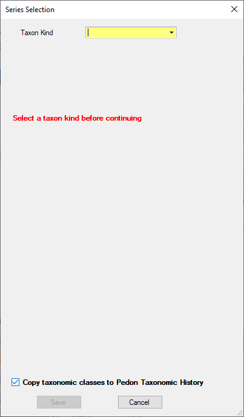
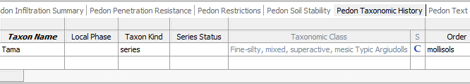
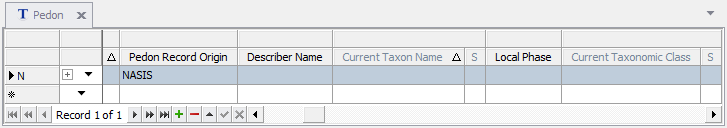
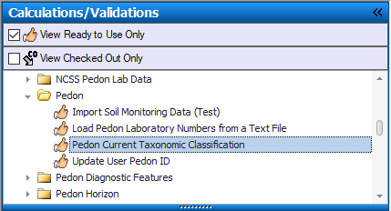
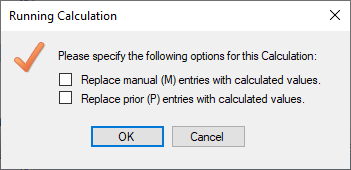
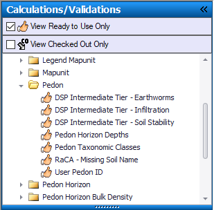
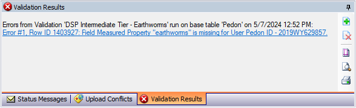
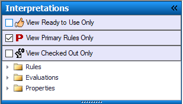

Exercise 8.1 – Calculations
Create a New Pedon
Open the Pedon table and add a new row. Select the Site/Site Obs of the one you created for the Edit Data exercise. It should be named NASIS Training Example 1 lastname, firstname. Next, fill in the User Pedon ID column with the same information as the user site id.
Next expand the pedon table to show the child tables and select the Pedon Taxonomic History Table. Create a new row in this table and add today’s date to the Classification Date. Next click on the empty cell below the classification name column. Notice the 3 dots button on the right side of the column.
Click this to open a series selection window that will assist in calculating many of the columns required for properly populating the taxonomy of a particular series.
Select and Calculate Series Classification
This series selection window guides you through the process of selecting and calculating the series classification. It will perform a search of the existing series and populate the correct information automatically.

Begin by choosing series as the Taxon Kind then type in “Tama” into the taxon name, then click the find by series name. Below you will see the search results. If there is more than one match you can browse to the next or previous results by clicking the arrow buttons.
Click the green arrow button to copy the Tama classification information to the pedon taxonomic classes. There are also cases where you may have the pedon classified, but may not know a series that fits. In these cases, you can populate the taxonomy first and search for matching series by clicking the find series by classification button.
Take a screenshot to submit, then click the save button on the series selection window to return to the table view. You will now see the data is populated and the taxonomic class is showing the “C” icon on the right side in an S (meaning status) column, meaning it has been calculated.

Right click on the “S” column and select view information. What does the column description tell you about the column? What are the other possible statuses? You will see this “S” column paired with many other columns in the database
Calculate Current Taxon Name
Return to the pedon table and locate the “current taxon name” column. This column is empty but notice it has an “S” column.

Open the calculations/validations tab in the table of contents to the left and expand the calculations folder. The calculations are organized by the table they operate on. Find the Pedon folder since the calculation we want will be for the current taxon name in the pedon table and expand it. Right click on the “Pedon Current Taxonomic Classification” and click “run for all rows in selected set”.

A window will appear providing additional options for controlling how the calculation works:

In this case we have neither manual nor prior values so these options will not change the outcome of our calculation so leave both unchecked. There may be instances where enabling these options can be useful for example if you had prior values or manual values that you wanted to replace, the calculation would not by default replace those values, instead you would need to check the boxes to overwrite them. Now upload your changes and check your data back in. You will be using this pedon in the next exercise.
Screenshots
Take a screenshot of the columns that were calculated with the current taxon name calculation and submit it along with your other screenshot by placing in your exercise submission folder.
End of Exercise
Exercise 8.2 - Validations
Load Pedon
Use your pedon from the previous exercise. If you don’t have it in your selected set, query for it. Once you have the pedon loaded open the Pedon table.
Validate Data in the Pedon Table
Validations are organized in the same way as calculations. Find the Validations folder in the Calculations/Validations section of the table of contents and expand it to view the sub-folders. Find the pedon folder and expand it.

Right click on the “DSP Intermediate Tier - Earthworms” Validation and select “Run for all rows in selected set. Notice the validation results window has updated with a message

The message indicates the issue, and you can use the hyperlink to highlight the offending row. Find the Field Measured Property Name column in the Pedon Field Measured Property table and correct the error by populating it with “earthworms”. Now run the same validation again. Notice a new set of errors has appeared. Some validations check for only one data element, others check multiple data elements. This one looks at multiple. Continue making the required corrections and then take a screenshot of the status messages window showing zero errors found and save it to submit.
Run Multiple Validations
You can also run multiple validations at one time by holding down the ctrl key and clicking each validation you want to run, or by holding the shift key to select all validations between the first and last validation selected. Select the first validation in the pedon folder hold shift and select the last validation in the folder. Now right click and select “run for all rows in selected set”
Screenshots
Take a screenshot of the validations results window after running the validations above. Submit this along with your other screenshot by adding it to your exercise submission folder.
End of Exercise
Exercise 8.3 - Interpretations
Query Data
In the NSSC Pangaea folder, run the “Area/Legend/Mapunit/DMU by areasymbol (official data)” query to get the data into your selected set. Recall the steps you need to take to do this. You can refer to the previous exercises if needed. Use areasymbol “IA001”.
Choose a Component
Interpretations run on components, so you will need to choose a component from the component table. Highlight the row of your choice.
Run an interpretation
There are 3 entirely separate courses offered by SPSD that cover the in-depth details of interpretations, so for this training we won’t dive too deep into everything there is to know about them. We will show you how to run them and view the results. Click the interpretations tab in the table of contents. Notice there are checkboxes for view ready to use only, view primary rules only and view checked out only. Make sure the view ready to use only and view primary rules only are checked.

There are 3 folders in the interpretations tab: rules, evaluations, and properties. The rules folder contains the interpretations you may already be familiar with. These are the basis for the interpretations you see on Web Soil Survey. The evaluations and properties folders are different parts that are used to generate data that the rule uses to make the interpretation.
Expand the rules folder and then notice the more familiar folder structure now is broken down by NASIS sites or regions, which contain the rules. Expand the NSSC Pangaea folder and right click “ENG – Dwellings With Basements” then select run against local database.
A browser window will appear with the results of the interpretation on the component you had highlighted previously. The first row in the table provides the rating for the Interpretation, followed by the individual sub-rules that are parts of it. A rule can have many sub-rules, and each sub-rule multiple evaluations and each evaluation a property. Scroll down farther in the document to see the results of the evaluations and properties. Save this HTML report to send to your mentor.
Running interpretations on your data is an important part of ensuring the values in the database are reasonable and interpreting as expected.
Send Report
Submit the report you saved by adding it to your submission folder.
End of Exercise